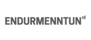

SQL fyrirspurnarmálið
Ágúst 2021
Þessi vefsíða inniheldur ýmislegt aukaefni í tengslum við námskeiðið SQL fyrirspurnarmálið hjá
Endurmenntun Háskóla Íslands í febrúar 2022. Þetta er
framhald námskeiðsins Gagnasöfn og SQL.
Kennari er Hjálmtýr Hafsteinsson dósent í tölvunarfræði við Háskóla Íslands.
Kennsla í námskeiðinu er í tveimur hlutum:
- Mánudag 14. febrúar kl. 13:00 - 16:00
- Fimmtudag 17. febrúar kl. 13:00 - 16:00
Glærur:
Æfingar:
Uppsetning:
- Notað verður gagnasafnskerfið SQLite. Það fylgir með á MacOS og Linux, en við þurfum að ná í Windows útgáfuna.
- Windows: Náið í skránna sqlite3.exe (hægri-smella og "Save link as...") og vistið hana í nýrri möppu á tölvunni.
- MacOS: Opna "Terminal" glugga (sjá myndband) og gefa skipunina sqlite3
- Linux: Opna "Terminal" glugga og gefa skipunina sqlite3
- Náið svo í sýnisgagnasafnið sumarhus.db (hægri-smella og "Save link as...") og vistið það í sömu möppu og sqlite3.exe (í Windows).
- Ræsið síðan SQLite með því að keyra skránna sqlite3 og gefið skipunina ".open sumarhus.db" (munið eftir punktinum
fremst og ekki slá inn gæsalappirnar!)
- Sýnisgagnasafnið sem við notum er í skránni sumarhus.db og hér eru gögnin í henni. Það inniheldur
ýmsar upplýsingar um útleigu á sumarhúsum. Hér er skipanaskrá sem býr til töflurnar og sýnisgögnin: sumarhus.sql
- Hér er listi yfir skipanir sem hægt er að nota í SQLite (fæst með skipuninni .help). Þær
skipanir sem við notum mest eru feitletraðar.
- Mynd sem sýnir framkvæmdaröð einstakra hluta SELECT-skipunar
- Yfirlitsblað um SQL. Sýnir þær skipanir sem þetta námskeið fer yfir
SQLite heimildir
Notendavænni viðmót á SQLite:
- sqlite.online - SQLite sem keyrir í vafra. Engin uppsetning!
- DB Browser for SQLite - Opið og frítt (open source) viðmót, til fyrir Windows, Mac og Linux
- SQLiteSpy - Þetta viðmót er frítt, einfalt og engin uppsetning.
Annað SQL kennsluefni
Háskólanámskeið um Gagnasafnsfræði
- Database Systems - nýlegt námskeið frá Carnegie Mellon háskólanum. Farið
mjög hratt yfir SQL (bara fyrsta vikan!)
- Introduction to Databases frá Stanford er eitt þekktasta
námskeiðið um gagnasafnsfræði. Það er nú á edX. Það þarf að skrá sig þar inn og síðan hægt að velja "Audit This Course".
- Introduction to Structured Query Language (SQL) - námskeið á
Coursera frá háskólanum í Michigan sem kennir á gagnasöfn út frá vef sjónarhorni (veljið "Enroll"
og síðan "Audit course", í smáu letri neðst!)
- Database Management Essentials - námskeið á Coursera frá viðskiptafræðideild
háskólans í Colorado (veljið "Enroll" og síðan "Audit course", í smáu letri neðst!)
Önnur frí venslagagnasafnskerfi
hh@hi.is, febrúar, 2022.
{kind=link}